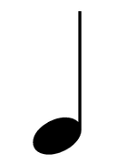
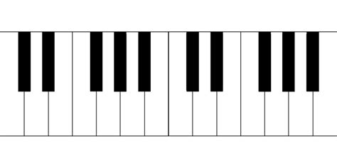

Music Theory Basics
Music theory is a very nuanced art. There are a lot of of complicated nooks and crannies within the
thing. However, for this page, we will focus on the basic aspects of music theory, starting with note
pitches and durations, going onto the staves, and then talking a little bit on chords and maybe even
chord progressions.
To begin, let's start off with the staff. For this page, we'll just focus on the treble clef. A clef is
a way to designate what notes go where. The treble clef is shown with the symbol seen on the left. I'm sure
most of you reading this have seen this symbol before. It goes on a staff, which is five lines that go from
one end of the page to another, and is where notes are placed. From there it is read in the same way that you
are reading this page. One staff line is what the 5 lines together are referred to as. Once the staff line reaches
the end of the line, it keeps going as a return below it, just like words on a page. Other clefs that can be
used on staves include the bass clef, tenor clef, and alto clef, but those are not important right now.

Next, let's talk about general music note. Pictured is an example of a quarter note. In music, notes are
what we use to play sound. Starting with duration, which is how long a note lasts, the quarter note generally
being the duration of a beat (What you tap to when listening to music). Other durations include the half note,
which is double the length of a quarter note, and is shown like the picture but hollow, the whole note, which
is double the length of the half note, and is shown like the half note but with no stem, and the eighth note,
which is half the lenght of the quarter note and is shown like the picture but with a flag-like thing on the
stem.

Next, pitch. Music notes, in simplicity, come with two main attributes: duration and pitch. Now, we already went
over duration, which is shown by the shape of the note. Pitch is determined by what line or space on the stave the
ball of the note is on. A note can go either in a space or a line within the staff that was explained above. There
are 12 unique notes within an octave (more on that later), but we will just focus on 7 of them: A, B, C, D, E, F,
and G. Now for some reason some people years ago decided that a nice default note to start learning with would be C.
So the important part to learn about pitch within a scale (more on that later too, haha!) is that the scale we will
be using goes C, D, E, F, G, A, B, C. Blah blah blah blah blah blah!! I realized I couldn't put the content I needed
to in time to really get this done. Sorry if you were actually learning. Maybe one day I will complete this.